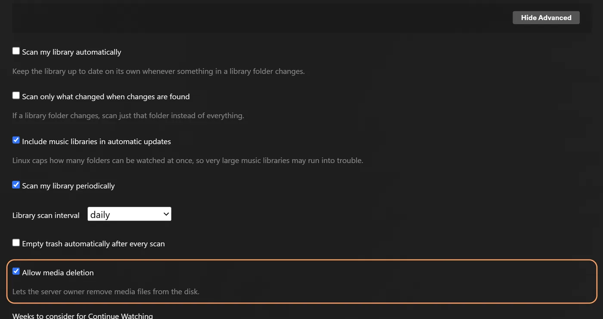

rex 与 zurg
rex is a media server for the official Plex apps that owns no files. The official Plex apps see it as a normal Plex server. Any app can fill it (rex with your own app); this page sets it up with zurg, which sends it your debrid library, and when you press play rex streams the file straight from zurg. Nothing is downloaded first.
Diese Seite führt dich Schritt für Schritt von null bis zum ersten abgespielten Film. Jeder Schritt erklärt, was er tut, warum er wichtig ist und was du sehen solltest, bevor du weitergehst. Wenn das, was du siehst, nicht passt, bleib an dieser Stelle stehen: Der nächste Schritt behebt das nicht.

Vier Dinge solltest du wissen, bevor du anfängst:
- zurg ist der Teil, der mit deinem Debrid-Dienst spricht. Er listet auf, was in deinem Konto liegt, und liefert die Dateien aus.
- rex ist der Teil, mit dem deine Plex-Apps sprechen. Er speichert keine Dateien und braucht keinen Speicherplatz für Medien. Er braucht kein rclone und keinen Mount.
- zurg meldet rex selbst, was es ist. Du gibst zurg die Adresse von rex, und zurg erledigt den Rest. Du tippst nie die Angaben von zurg in rex ein.
- zurg und DMM bestimmen, was jede Datei ist; Plex beschreibt sie. zurg fragt DMM, welcher Film oder welche Episode jede Datei ist, und rex zeigt diesen Titel mit den Postern und Zusammenfassungen, die Plex' eigene Metadaten liefern, sobald rex mit einem Plex-Konto verbunden ist. rex rät nie anhand eines Dateinamens.
rex ist für die private Nutzung kostenlos (PolyForm Noncommercial): kein Sponsor-Tarif und kein Konto nötig, um es herunterzuladen. Die Nightly-Version von zurg, die dieser Leitfaden verwendet, bleibt ein Sponsor-Release; rex with your own app betreibt rex ohne sie. Nur ein Handy oder eine TV-Box? zurg+rex, ein Plex-Server auf deinem Handy, betreibt zurg und rex gemeinsam darauf: siehe den Android-Leitfaden.
开始之前
本页需要 rex nightly 2026.10.25 或更新版本，以及 zurg nightly 2026.10.27 或更新版本。
第 1 步：安装 zurg
作用。 下载 zurg，让你填写网盘账号，并把 zurg 设置为服务。服务会在重启电脑后自动恢复。
为什么重要。 rex 显示的所有内容都来自 zurg。如果 zurg 看不到你的资源库，rex 也永远看不到。
在 Windows 和 macOS 上，请用下面的安装程序安装 zurg，不要在 Docker Desktop 里安装。 rex 会从 zurg 提供的地址读取每个文件，而它无法访问 Docker Desktop 里的 zurg。结果是标题能显示，但什么都播放不了。
curl -fsSL https://raw.githubusercontent.com/debridmediamanager/zurg-site/main/public/install.sh | bash
sudo loginctl enable-linger "$USER"zurg 会被安装到 ~/zurg。第二行命令可以让你的服务在注销后继续运行。
curl -fsSL https://raw.githubusercontent.com/debridmediamanager/zurg-site/main/public/install.sh | bashzurg 会被安装到 ~/zurg。安装程序还会安装 macFUSE，macOS 可能会要求你在 System Settings、Privacy & Security 中允许它，之后需要重启：macOS 上的 zurg。
在 PowerShell 中运行：
irm https://raw.githubusercontent.com/debridmediamanager/zurg-site/main/public/install.ps1 | iexzurg 会被安装到 $HOME\zurg（即 C:\Users\you\zurg）。安装程序还会安装 WinFsp，这一步需要管理员授权。每次你登录 Windows 时，zurg 都会自动启动：Windows 上的 zurg。
安装程序会询问你使用哪些服务（Real-Debrid 请输入 1），然后要求你输入 API 令牌。粘贴时令牌不会显示出来。
你应该看到什么。 安装结束时，会列出一系列 PASS 行，并显示 ==> zurg is installed in 加上 zurg 的文件夹路径。接着 zurg 会加载你的资源库：账号较小只需几秒钟，在 Real-Debrid 上有一千个资源的账号大约需要十分钟。在浏览器中打开 zurg 的仪表盘 http://<this machine>:9999。等加载完成后，Library Size 会显示你的项目数量。
已经运行过 zurg 了？用下面的命令更新并重启：cd ~/zurg && ./zurg update && ./zurg service restart（在 Windows 上使用 cd $HOME\zurg; .\zurg.exe update; .\zurg.exe service restart）。
第 2 步：安装 rex
作用。 把 rex 下载到 ~/rex（Windows 上是 $HOME\rex），并将它作为服务启动，后面几步需要的东西都会准备好。这一步之后的步骤不需要重启；只有下面可选的部分才需要。
为什么重要。 rex 是你的 Plex 应用所连接的对象。第一次启动时会创建 rex.db，里面保存你的媒体库、zurg 发来的所有内容，以及你的观看记录。
在 Linux 上，你也可以改用 Docker 运行 zurg 和 rex：参见
mkdir -p ~/rex && cd ~/rex
TAG=$(curl -fsSL 'https://api.github.com/repos/debridmediamanager/rex/releases?per_page=1' | sed -n 's/.*"tag_name": *"\([^"]*\)".*/\1/p' | head -1)
P=$(uname -s | tr A-Z a-z)-$(uname -m | sed 's/x86_64/amd64/;s/aarch64/arm64/')
curl -fL "https://github.com/debridmediamanager/rex/releases/download/$TAG/rex-$TAG-$P.tar.gz" | tar xz --strip-components=1在 PowerShell 中：
New-Item -ItemType Directory -Force $HOME\rex | Out-Null; cd $HOME\rex
$tag = (Invoke-RestMethod 'https://api.github.com/repos/debridmediamanager/rex/releases?per_page=1')[0].tag_name
curl.exe -fLO "https://github.com/debridmediamanager/rex/releases/download/$tag/rex-$tag-windows-amd64.zip"
tar -xf "rex-$tag-windows-amd64.zip" --strip-components=1; Remove-Item "rex-$tag-windows-amd64.zip"这会为你的机器下载 rex 的最新版本，通常是 nightly 构建。
找到 rex 的局域网 IP，也就是它在你家庭网络中的地址。在 Linux 上，hostname -I 会打印出好几个地址：选那个位于你家庭网络的，不要选以 172.17.（Docker）或 100.（Tailscale）开头的。在 macOS 上，ipconfig getifaddr en0 会打印它（如果它没有输出，就试 en1）。在 Windows 上，ipconfig 会在你的 Wi-Fi 或以太网适配器下面把它列为 IPv4 Address。本页所有地方都写作 192.168.1.20：请把你自己的地址填在对应位置。 Plex 应用、zurg 以及你自己的命令都通过这个地址连接 rex。
Plex Media Server 和 rex 在同一台机器上运行吗？ 请把下面 rex 启动命令的末尾改为 --port 32500，并且在所有命令或设置中凡是写 32400 的地方都改用 32500，包括 Windows 防火墙规则。Plex 已经占用了 32400 端口，以及应用用来查找服务器的端口；如果 rex 用其他端口，就不会和 Plex 冲突。这样你的应用里会出现两个同名的服务器：一个是 rex（与你共享的那个），旁边是新账户的名字。当 rex 已经绑定到它的 Plex 账户后（
现在把它设置为服务：
创建 ~/.config/systemd/user/rex.service：
mkdir -p ~/.config/systemd/user
nano ~/.config/systemd/user/rex.service[Unit]
Description=rex
After=network-online.target
[Service]
WorkingDirectory=%h/rex
EnvironmentFile=-%h/rex/rex.env
ExecStart=%h/rex/rex
Restart=always
RestartSec=5
[Install]
WantedBy=default.targetsystemctl --user daemon-reload
systemctl --user enable --now rex
journalctl --user -u rex -frex 的启动命令就是 ExecStart 那一行，密钥放在 ~/rex/rex.env 中，每行一个 NAME=value。修改后，运行 systemctl --user daemon-reload && systemctl --user restart rex 来重启 rex。journalctl --user -u rex -f 可以查看它的日志。
run.sh 会在它所在的文件夹中启动 rex，而 LaunchAgent 会在你登录时启动 run.sh：
cp ~/rex/examples/run.sh.example ~/rex/run.sh
mkdir -p ~/Library/LaunchAgents
cat > ~/Library/LaunchAgents/com.rex.plist <<PLIST
<?xml version="1.0" encoding="UTF-8"?>
<!DOCTYPE plist PUBLIC "-//Apple//DTD PLIST 1.0//EN" "http://www.apple.com/DTDs/PropertyList-1.0.dtd">
<plist version="1.0"><dict>
<key>Label</key><string>com.rex</string>
<key>ProgramArguments</key><array><string>/bin/bash</string><string>$HOME/rex/run.sh</string></array>
<key>RunAtLoad</key><true/><key>KeepAlive</key><true/>
<key>StandardOutPath</key><string>$HOME/rex/rex.log</string>
<key>StandardErrorPath</key><string>$HOME/rex/rex.log</string>
</dict></plist>
PLIST
launchctl load ~/Library/LaunchAgents/com.rex.plist
tail -F ~/rex/rex.logrex 的启动命令是 ~/rex/run.sh 的最后一行，密钥放在 ~/rex/rex.env 中，每行一个 NAME=value。修改后，运行 launchctl kickstart -k gui/$(id -u)/com.rex 来重启 rex。tail -f ~/rex/rex.log 可以查看它的日志。
只有在你登录这台 Mac 期间，rex 才会运行。如果这台 Mac 会自行重启，请开启自动登录（System Settings，Users & Groups）。如果开启了 macOS 防火墙，请在 macOS 询问时允许 rex，或者在防火墙的 Options 中添加 ~/rex/rex。
以管理员身份打开 PowerShell，然后用 cd $HOME\rex 进入 rex 的文件夹。先创建 run.cmd，它会在自己所在的文件夹中启动 rex，并把日志写入 rex.log。记事本会提示你创建这个文件：
notepad run.cmd@echo off
cd /d "%~dp0"
rex.exe 2>> rex.log保存文件。然后在 Windows 防火墙中允许 rex 的端口和两个发现端口通过，并立即启动 rex，以及以后每次登录时自动启动：
New-NetFirewallRule -DisplayName rex -Protocol TCP -LocalPort 32400
New-NetFirewallRule -DisplayName "rex discovery" -Protocol UDP -LocalPort 32410,32414
$settings = New-ScheduledTaskSettingsSet -ExecutionTimeLimit 0 -AllowStartIfOnBatteries -DontStopIfGoingOnBatteries
Register-ScheduledTask rex -Action (New-ScheduledTaskAction -Execute "$HOME\rex\run.cmd") -Trigger (New-ScheduledTaskTrigger -AtLogOn -User $env:USERNAME) -Settings $settings
Start-ScheduledTask rex; Start-Sleep 3
Get-Content rex.log -Waitrex 的启动命令就是 run.cmd 中的 rex.exe 那一行，密钥放在它上面，每行一个 set NAME=value。修改后，运行 Stop-Process -Name rex; Start-Sleep 1; Start-ScheduledTask rex 来重启 rex。Get-Content $HOME\rex\rex.log -Wait 可以查看它的日志。
如果你是在 PowerShell 中手动启动的 rex，那么它的日志只会出现在那个窗口里，不会有 rex.log，而且重启后也没有任务会自动启动它。rex 会把数据库和绑定信息保存在它启动时所在的文件夹中，所以从其他文件夹启动的 rex 会是一个新的、未绑定的服务器。用 Ctrl+C 停止它，然后用相同的参数在 rex 的文件夹中重新启动；更好的做法是设置上面的任务。
rex 只会在你登录 Windows 期间运行，并且是在它自己的窗口中：请保持该窗口开着。在 PowerShell 中，本页提到 curl 的地方请输入 curl.exe：Windows PowerShell 自带的 curl 是另一个命令。
你应该看到什么。 前面几行中会有：
INFO seeded rex.db: an empty library named yourhost, machine=...
INFO no source yet: a source registers itself once pointed at this server (PUT /rex/sources/{name}, docs/feed-api.md)
INFO claim state: unclaimed
INFO rex on http://192.168.1.20:32400 machine=... items=0 parts=proxyrex 会用机器的名字来命名自己，你的 Plex 应用会显示这个名字。no source yet 是正常的，因为还没有告诉 zurg 关于 rex 的事。保持日志窗口打开。
第 3 步：添加到 Plex 账号
Was es tut. Registriert rex bei einem Plex-Konto, so wie man einen echten Plex Media Server registrieren würde, und teilt es mit deinem eigenen Konto.
Warum es wichtig ist. rex holt sich Name, Poster, Zusammenfassung und Episodennamen aller Titel aus den eigenen Metadaten von Plex und darf Plex erst fragen, wenn es an einem Konto hängt. Titel, die zurg vor der Registrierung geschickt hat, bekommen ihren Namen, sobald die Registrierung durch ist. Außerdem funktioniert damit Fix Match, der Hinweis „unclaimed“ verschwindet, und für
Nimm dafür ein neues Plex-Konto, nicht dein eigenes. rex wird nicht von Plex hergestellt, und Plex könnte gegen ein Konto vorgehen, das es registriert. Halte dein echtes Konto mit Wiedergabeverlauf, Freunden und eventuellem Plex Pass da raus: Erstelle auf plex.tv ein neues kostenloses Konto mit einer E-Mail-Adresse, die du sonst nirgends benutzt, registriere rex mit diesem Konto und teile rex mit deinem eigenen Konto. Dann schaust du angemeldet als du selbst, so wie du den Server eines Freundes nutzen würdest. Bis dieser Schritt erledigt ist, spielt rex nichts ab.
在新账号上注册 rex
- 在 plex.tv 上以新账号登录，打开 plex.tv/claim 并复制验证码。验证码大约五分钟后过期。
-
在 rex 所在的机器上（Windows 上为
curl.exe）：curl -X POST "http://192.168.1.20:32400/myplex/claim?token=claim-xxxxxxxxxxxx" curl -s http://192.168.1.20:32400/identity
你应该看到的结果。 第二条命令会显示 claimed="1"，并且 rex 的文件夹中存在 claim_state.json。请备份该文件：没有它，你就得用新的验证码重新认领。该文件存在时，rex 会拒绝再次认领。
与你自己的账号共享
- 仍以新账号登录，打开 app.plex.tv，然后依次点击 Settings（扳手图标）、Manage Library Access 和 Grant Library Access。
- 输入你自己账号的用户名或邮箱，选择 rex 服务器以及两个媒体库 Movies 和 TV Shows，然后发送邀请。
- 退出登录，以你自己的身份登录，并接受邀请。邀请会通过邮件发送，也会显示在 app.plex.tv 中。


你应该看到的效果。 以你自己的身份登录后，Plex 应用会在你自己的服务器旁边列出 rex 服务器，里面有两个媒体库，在下一步之前都是空的。你在 rex 上的观看记录属于你自己，会与新账号的记录分开保存。如果家里还有其他人需要使用，也用同样的方法分享给他们即可。
第 4 步：将 zurg 连接到 rex
作用。 告诉 zurg rex 的地址在哪。zurg 会先向 rex 自我介绍，然后发送整个库，读取每个文件的视频和音频信息并一并发送，之后每次有变化都会实时推送。
为什么重要。 这是两者之间唯一的连接。rex 没有针对 zurg 的设置项：如果缺少 rex_url，rex 就会一直是空的。rex_url 必须是 rex 在你家网络中的普通 http:// 地址，不能是来自
zurg 不会同时用两次同一个密钥启动。如果你在 zurg 的仪表板里输入密钥，它会把 dmm_api_key 写入配置文件。没有 DMM 密钥的话，就不要写 dmm_api_key。
先检查 zurg 的配置文件里是否已经有这两行：
grep -n '^rex_url:\|^dmm_api_key:' ~/zurg/config.yml如果输出了某一行，说明该密钥已经设置好了：用 nano ~/zurg/config.yml 直接改那一行，并且不要把它放进下面的 printf 里。
printf '\nrex_url: http://192.168.1.20:32400\ndmm_api_key: your_dmm_key\n' >> ~/zurg/config.yml
cd ~/zurg && ./zurg service restart用 notepad $HOME\zurg\config.yml 打开 zurg 的配置文件。如果里面已经有 rex_url: 或 dmm_api_key: 这一行，就直接修改那一行；其余的添加到文件末尾：
rex_url: http://192.168.1.20:32400
dmm_api_key: your_dmm_key保存文件，然后重启 zurg：
cd $HOME\zurg; .\zurg.exe service restart你应该看到什么。 zurg 重新加载完库之后，zurg 的日志（~/zurg/logs/zurg.log，在 Windows 上是 $HOME\zurg\logs\zurg.log）会显示 DMM placed N releases（没有 DMM 密钥时显示：Placed N releases by their names (no DMM sponsor key)），rex 的日志则会打印：
INFO SOURCES zurg registered at http://192.168.1.20:9999/dav
INFO SOURCES PUT /rex/sources/zurg -> 200
INFO FEED zurg upsert: 0 created, 0 updated, 200 held, 0 unchanged, 0 rejected
INFO FEED identified "Sintel.mp4" -> movie tmdb:45745 (placed)
INFO FEED zurg upsert: 2 created, 0 updated, 0 held, 0 unchanged, 0 rejectedrex 会从 registered at 那一行的地址读取每个文件，所以 rex 必须能在那个地址访问到 zurg。只有当地址发生变化时，rex 才会再次记录这一行。
held 表示 zurg 还没有读取该文件的信息。zurg 在库加载完成后就会开始逐个读取，一个版本一个版本地处理，整季合集的各集会一起到达。如果使用了 DMM 密钥，每分钟最多能从 DMM 存储的信息中获取大约 20 个版本。一个大库需要好几个小时才能完全填充。每个标题的信息读取完成后，就会立即在 rex 中出现。之后你在网盘账户里新增的内容，zurg 读取后会自动显示出来。
如果没有出现。
-
rex 日志里完全没有内容：可能是 zurg 还在加载库，可能是 zurg 版本过旧（按
step 1 中的方法更新），也可能是rex_url拼写有误。grep 'rex feed' ~/zurg/logs/zurg.log | tail -n 5会显示 zurg 这一侧的情况（Windows 上使用Select-String 'rex feed' $HOME\zurg\logs\zurg.log | Select-Object -Last 5）：如果没有rex feed: pushing the library to ...这一行，说明 zurg 没有读取到rex_url；如果出现rex feed: snapshot failed, retrying in ...，则说明 zurg 无法访问该地址上的 rex。 -
某个标题一直显示
held，并且 zurg 记录了Cannot probe file ...：说明第一次从网盘服务读取失败了。zurg 会自动重试；如果想立即重试，可以在 zurg 仪表板的 Utilities 下点击 Analyze & Tag Library。
-
标题出现了，但没有
identified相关的行：说明 zurg 无法通过名称匹配这些标题。如果设置了dmm_api_key，而该密钥不是赞助者密钥，zurg 会记录DMM refused the API key for placement。此时 zurg 会改用名称匹配，并在一天后重新尝试该密钥；重启 zurg 时则会立即重试。 -
标题出现了，但无法播放：说明 rex 无法访问 zurg 的
registered at地址。When something is wrong 中的upstream failed一行可以帮你检查这个问题。
同时运行多个 zurg（每个对应一个网盘服务）？可以多加一行给每个 zurg 起个名字，比如 rex_source: rd、rex_source: tb 等。它们会填充到同一个库中。
为什么 DMM 会放置这些文件
DMM 知道每个文件真正属于哪里。文件名里的集数编号常常和 Plex 应用显示的剧集列表对不上:
zurg 放不进去的文件会保持未匹配状态。比如电影标题和文件名一样,或者剧集所在的剧名和发布名一样、只是按文件顺序编号。如果有 DMM key,zurg 会在一天后再向 DMM 询问一次。你也可以自己动手:在 Plex 应用里,用拥有 rex 的那个新账号登录,然后点 Fix Match 修正(rex 会拒绝共享给其他账号的人这样做)。你用 Fix Match 修正过的标题会保持你设定的样子。


zurg 的面板会显示它对每个 release 做了什么。在 Torrent Manager 里打开那个 release,看一下 Placement。点 Place again 会再让 DMM 处理一次。在 External ID 里填入 IMDb id,zurg 就会按这个 id 来放置。

第 5 步：观看内容
作用。 在 Plex 应用中打开 rex，和打开任何 Plex 服务器的方式一样。
为什么重要。 这是整个设置的核心。它也验证了最后一环：你观看时，rex 能从 zurg 读取文件。
在同一家庭网络中的手机、电视或电脑上打开 Plex 应用（不是网页浏览器）。rex 会以该设备的名称出现，下面有 Movies 和 TV Shows。选一部电影，然后按播放。

在家里不需要额外设置：Plex 应用通过 Plex 自带的本地发现功能找到 rex，并通过你的网络连接。这要求设备与 rex 在同一网络（不能是访客 Wi-Fi 或单独的 VLAN）。发现功能使用 UDP 端口 32410 和 32414，因此运行 rex 的机器上的防火墙必须放行这两个端口（在 Windows 上，第 2 步的防火墙规则会处理这件事）。rex 使用端口 32400 时会响应发现请求。如果因为 Plex 和 rex 运行在同一台机器上，你把 rex 改到了 32500，那么发现工作就交给那个 Plex 处理，应用会通过 rex 所http://192.168.1.20:32400/web 不是 Plex Web：rex 没有自己的网页应用，那个页面只会告诉你 rex 是否已被认领，以及该去哪里观看。
你应该看到什么。 海报、标题和年份和任何 Plex 服务器一样，电影可以正常播放。
你可能会遇到两种情况：
- "yourhost server is unclaimed and not secure"。 Plex 应用对任何不在 Plex 账户下的服务器都会显示这条提示，而在加入账户之前，rex 无法播放任何内容。请完成
第 3 步 。不要在以你自己身份登录时按 Claim it now：这会把 rex 注册到你自己的账户下。 - "This server is not powerful enough to convert video"。 如果每个设备上的每个标题都失败，请在按下播放后立即查看 rex 的日志：如果里面有
upstream failed或502，说明 rex 连不上 zurg，FFmpeg 也解决不了这个问题。出现问题时 表格中的upstream failed一行说明了该怎么做。如果只有部分文件失败，通常只在网页浏览器中出现，那说明设备无法直接播放这些文件，常见原因是 AC3 或 DTS 音频。电视和手机上的 Plex 应用大多数文件都能直接播放。要在所有设备上播放所有文件，请设置转换视频 。
zurg 中除 movies 和 shows 以外的文件夹（例如 anime）不需要任何额外设置：每个文件会根据 zurg 对它的判断，进入 Movies 或 TV Shows。zurg 无法判断类型的文件，如果是剧集，会先留在 Movies 中。
如果你想为这些文件夹单独建立媒体库，请在 zurg 的 config.yml 中、过滤器旁边，给相应文件夹添加 rex_movies（用于电影文件夹）、rex_shows（用于剧集文件夹），只有文件夹同时包含两者时才同时添加两者。然后按rex_shows，就会得到一个空的 TV 媒体库。DMM 会把一个文件夹中的部分文件归为电影，部分归为剧集；没有自身标题的那类文件会进入 Movies 或 TV Shows：
directories:
anime:
rex_shows: Anime
rex_movies: Anime Movies
films:
rex_movies: Filmszurg 加载完成后，rex 会建立 Anime、Anime Movies 和 Films，并把它们已经从 anime 中显示的内容原样移入其中：观看记录、Fix Match 以及所做的编辑都会保留。打开的 Plex Web 会在侧边栏的 More 下立即列出它们，你可以把它们固定在那里。按rex_shows 或 rex_movies，rex 为它建立的媒体库会保留，无论是否为空：请以新账户身份登录 Plex 应用后将其删除。如果媒体库没有出现，zurg 的日志或 rex 的日志会说明原因。

在 Plex 应用中删除，会从你的 debrid 账户中删除内容
以新账户身份登录时，电影或剧集上的 Delete 也会在 zurg 处删除其文件；当某个种子的文件全部删除后，zurg 会把该种子从你的 debrid 账户中移除。与 rex 共享的账户（包括你自己的账户）无法删除。要关闭删除功能：在 app.plex.tv 中以新账户身份打开 Settings，进入 rex 服务器的 Library，点击 Show Advanced，取消勾选 Allow media deletion 并保存。之后 rex 会拒绝所有删除操作。

如果某个标题在你的 debrid 账户中以其他方式消失（在那边被移除，或被 zurg 移除），它会像在 Plex 中一样进入 rex 中该媒体库的回收站：它会保留下来，显示为不可用，并保留观看记录；如果 zurg 之后重新获得它，它会恢复原样。在媒体库上点击 Empty Trash 可以永久删除它；Empty trash automatically after every scan（位于 Settings、Library 中）会自动完成这件事，但它默认是关闭的。
备份 rex 文件夹中的 rex.db（它包含你的媒体库、观看记录和 zurg 的登录信息，所以请妥善保管），以及在生成后的 claim_state.json 和 rex-direct.json（分别是认领信息和 rex-direct 的证书私钥）：
sudo apt install -y sqlite3 # once, on Linux; macOS has it
mkdir -p ~/rex-backup
sqlite3 ~/rex/rex.db ".backup $HOME/rex-backup/rex.db"
cp ~/rex/*.json ~/rex-backup/Windows 上没有 sqlite3，所以请先暂时停止 rex，然后复制 rex.db 以及同目录下以相同名称开头的两个文件：
Stop-Process -Name rex; Start-Sleep 1
New-Item -ItemType Directory -Force $HOME\rex-backup | Out-Null
Copy-Item $HOME\rex\rex.db*, $HOME\rex\*.json $HOME\rex-backup
Start-ScheduledTask rex在 Docker 中，这些文件位于 ~/rex/config，且只有 root 用户可以读取。请在容器内部备份：运行 docker exec rex sqlite3 /config/rex.db ".backup /config/rex.db.bak"，然后运行 mkdir -p ~/rex-backup && sudo cp ~/rex/config/rex.db.bak ~/rex/config/*.json ~/rex-backup/。
你已经完成了。下面的章节都是可选的。
在家庭网络之外使用（可选）
作用。 为 rex 提供一个 HTTPS 地址，让离家在外的 Plex 应用也能访问它，并把这个地址告知 plex.tv。
为什么重要。 离家在外时，app.plex.tv 只会连接 HTTPS 地址，而其他 Plex 应用也更倾向于使用它。真正的 Plex 服务器在无法直连时可以回退到 Plex 的中继；rex 没有这个功能，所以需要你自己选择访问方式。rex 必须先/rex/（
Plex Pass。 离家在外时，只要两个账户都没有 Plex Pass 或 Remote Watch Pass，Plex Web 也能播放。其他 Plex 应用在离家环境下的表现尚未测试。
无论选哪种方式，你在外观看的每个字节都会通过家庭宽带的上传速度传出。20 Mbit/s 的上传速度可以轻松承载一个 1080p WEB-DL，但承载不了原盘（remux）。
该选哪一个
不推荐：
- Cloudflare tunnel。 所有流量都会经过 Cloudflare，而且它会丢弃文件首次读取时的
Range请求，因此每次开始播放都会从你的 debrid 服务拉取整个文件。 - Tailscale Funnel、ngrok 和其他托管隧道。 它们会限制带宽或每月流量，一部电影很快就会用完。Tailscale Funnel 还会公开 rex 的全部内容，包括 zurg 推送内容所用的 API：互联网上的任何人都可能向这个库添加或删除内容。
- 在没有 rex-direct 或自有证书的情况下转发 32400 端口。 Plex 应用会得到一个纯 HTTP 地址，而 app.plex.tv 会拒绝它。
rex-direct
rex-direct 是 DMM 对 plex.direct 的回应，默认开启。在路由器上，把 32400 端口（TCP）转发到运行 rex 的机器。就这些，不需要重启任何东西。
认领之后，DMM 会给 rex 分配两个域名：<hash>.rex-direct.debridmediamanager.com 指向你家的公网 IP，lan.<hash>.rex-direct.debridmediamanager.com 指向 rex 的局域网 IP，两个域名都带证书。第一个证书需要几分钟。rex 的日志会显示正在签发，然后在 rex-direct: 行里列出每个域名。家里公网 IP 变化和证书续期都会自动处理。一个 Plex 账号最多可以持有十个 rex-direct 域名。在家里，Plex 应用（包括 app.plex.tv）可以使用 lan. 域名，它直接通过你的局域网连到 rex，所以端口转发只在外出时才需要。在 app.plex.tv 中，Chrome 询问时请允许访问本地网络上的设备；否则它会回退到公共域名，而公共域名需要端口转发。
如果你的路由器把不同的外部端口转发到 rex，请按照REX_DIRECT_PORT=<that port> 这个键，然后重启 rex。端口转发不会开放 zurg 推送到的 API：见
rex-direct over IPv6
对于没有公网 IPv4（CGNAT 或 DS-Lite），但有 IPv6 的网络连接。DMM 通过 IPv6 地址连上 rex 并确认是同一台服务器后，会把 rex 的 rex-direct 域名也指向这个地址。你需要 rex nightly 2026.11.08 或更新版本，并且在 Docker 中使用主机网络模式（host networking）。
IPv6 没有端口转发，也没有端口映射：rex 在内外必须使用同一个端口，所以不要设置 REX_DIRECT_PORT。在路由器的防火墙中，允许通过 IPv6 访问 rex 所在机器的 32400 端口的入站 TCP 连接。rex 会在启动（或被认领）一分钟后公布它的 IPv6 地址，之后每 6 小时公布一次，所以请在启动 rex 之前添加这条规则，或者添加后重启 rex。大约一分钟后，它的日志会同时显示两个地址：
rex-direct: https://<hash>.rex-direct.debridmediamanager.com:32400 -> <IPv4> and <IPv6>如果几分钟内都没有出现包含 and <IPv6> 的日志行，说明 DMM 无法通过 IPv6 连到 rex。请检查防火墙规则，并确认 Docker 中的 rex 使用的是主机网络模式。在 Windows 上，rex 公布的是 Windows 的临时 IPv6 地址，而 Windows 大约每天会替换一次。请在管理员 PowerShell 中运行 netsh interface ipv6 set privacy state=disabled 关闭临时地址，然后重启 rex，让它改用固定地址。该日志行中的 <IPv4> 是运营商的共享地址，无法连到 rex，所以你要观看内容的设备也需要支持 IPv6。大多数移动网络都支持 IPv6；如果是只有 IPv4 的酒店或办公室网络，就无法通过这种方式连接 rex。
Tailscale serve
在 rex 所在的机器和你要观看的设备上安装 Tailscale，并登录同一个账号。然后在 rex 所在的机器上：
sudo tailscale serve --bg 32400在 Windows 上，请以管理员身份在 PowerShell 中运行，不要加 sudo。在 macOS 上，请使用 Tailscale 应用的命令行工具，同样不要加 sudo。
它会打印一个地址，例如 https://myhost.tailnet.ts.net。把它交给 rex 时，需要在末尾加上 :443：在--announce-url https://myhost.tailnet.ts.net:443，然后重启 rex。
Tailscale 会让你的设备之间直接相连，因此除非网络屏蔽了直连，视频流不会经过 Tailscale 的服务器。
Caddy
你需要在路由器上把 443 端口转发到运行 rex 的机器，并且给家里的 IP 地址起一个域名：
- 自己的域名： 添加一条
A记录，比如rex.example.com，指向你家的 IP。 - 没有域名： 用
1-2-3-4.sslip.io，数字换成你的公网 IP（curl -s ifconfig.me能显示出来）。它总是会解析到那个 IP。如果你的 IP 变了，就更新这个域名。
安装 Caddy，然后给它这个 Caddyfile（Linux 软件包使用 /etc/caddy/Caddyfile；macOS 和 Windows 上，把名为 Caddyfile 的文件放在单独的文件夹里，在该文件夹中运行 caddy run 即可读取它）：
rex.example.com {
respond /rex/* 403
reverse_proxy 192.168.1.20:32400
}respond /rex/* 403 会让 zurg 推送的 API 无法从互联网访问。zurg 仍然可以通过 http://192.168.1.20:32400 访问它。然后重新加载 Caddy（Linux 软件包使用 sudo systemctl reload caddy）。在 macOS 和 Windows 上，改为在该文件夹中启动 caddy run，并像
Caddy 加载这个文件时会自动获取证书，并且会自己续期。把 rex 的启动命令末尾加上 --announce-url https://rex.example.com:443，然后重启 rex。
小型 VPS
对于完全没有公网 IP 的连接，或者在不支持 IPv6 的网络上观看时，就需要用 VPS 来承载所有流量，这样就不能用
你需要 VPS 的 IP（下面用 1.2.3.4 表示），并且要在它上面开放 443、80 和 7000 端口。另外还要为隧道生成一个很长的随机字符串（用 openssl rand -hex 32 即可）。
在 VPS 上，安装 frp（即 frps 程序）和 Caddy。创建 frps.toml：
bindPort = 7000
auth.token = "your-long-random-string"
proxyBindAddr = "127.0.0.1"proxyBindAddr 会让隧道的服务端只监听 VPS 的 loopback，这样互联网上的访问只能通过 Caddy 访问 rex。创建 /etc/caddy/Caddyfile，把 VPS 的 IP 写成 1-2-3-4.sslip.io（这是一个免费域名，始终指向该 IP），或者使用你自己指向该 IP 的域名：
1-2-3-4.sslip.io {
respond /rex/* 403
reverse_proxy 127.0.0.1:32400
}respond /rex/* 403 会阻止互联网访问 zurg 推送到的 API。把 frps -c frps.toml 设置为服务并启动，然后运行 sudo systemctl reload caddy。
在 rex 机器上，同样安装 frp（即 frpc 程序），并创建 frpc.toml：
serverAddr = "1.2.3.4"
serverPort = 7000
auth.token = "your-long-random-string"
[[proxies]]
name = "rex"
type = "tcp"
localIP = "192.168.1.20"
localPort = 32400
remotePort = 32400把它设置为服务运行：在 Linux 上，可以创建 ~/.config/systemd/user/frpc.service，其中写入 ExecStart=%h/frp/frpc -c %h/frp/frpc.toml 和 Restart=always；在 macOS 和 Windows 上，则按照frpc -c frpc.toml 即可。然后在 rex 的启动命令末尾加上 --announce-url https://1-2-3-4.sslip.io:443，再添加环境变量 REX_DIRECT_URL=off（在 CGNAT 后面，rex-direct 域名的 IPv4 无法连到 rex，所以 plex.tv 不应该列出它），最后重启 rex。这样，家里的 app.plex.tv 也会走 VPS 连接；家里其他 Plex 应用仍然直接连接 rex。
你应该看到什么
curl -s https://lan.<hash>.rex-direct.debridmediamanager.com:32400/identity会返回一个简短的 XML 页面，里面有 rex 的 machineIdentifier，这是在家里电脑上的情况。如果地址或证书不对，curl 什么也不显示。请使用你自己的地址：rex 启动时会在日志里打印，例如 rex-direct: https://lan.<hash>.rex-direct.debridmediamanager.com:32400 -> 192.168.1.20 (LAN)（如果设置了 REX_DIRECT_URL=off，就不会有这一行）。在手机上关掉 Wi-Fi，然后用浏览器打开你的外网地址，并在末尾加上 /identity。如果用的是 rex-direct，外网地址就是 rex 日志里另一行 rex-direct: 输出的地址。如果用的是 Tailscale serve，地址是 https://myhost.tailnet.ts.net，但手机需要开启 Tailscale 才能打开。正常情况下会显示一个简短的 XML 页面，并且没有证书警告。
如果手机打不开，可能的原因有：端口没有转发（或者
rex 的日志会列出它对外宣告的地址：
INFO heartbeat every 600s for machine ... -> https://myhost.tailnet.ts.net:443,http://192.168.1.20:32400rex 每次启动都会打印这些。如果之后出现 heartbeat failed 或 announced but NOT visible，说明有问题。否则服务器会把这些地址列在 plex.tv 上，离家在外的 Plex 应用会选择它能访问的那一个。如果 rex 日志显示 waiting for a claim，请先完成
从另一台 Plex 服务器导入观看记录（可选）
看过别的 Plex 服务器吗？你的媒体库进入 rex 后，导入观看记录可以把你在那边看过的内容、看到的位置和星级评分都复制过来，每个人的记录分别导入。
Sonarr、Radarr 和 Bazarr（可选）
rex 不需要挂载，但 Sonarr 和 Radarr 需要：它们会导入到 zurg 的挂载点下的 __magic__ 中。按照 Sonarr & Radarr for torrents 或 for Usenet 的说明，将它们与 zurg 配置在一起即可；它们获取的内容会像其他内容一样经由 zurg 到达 rex。Bazarr 保存在这些导入文件旁边的字幕，约一分钟内就会出现在 rex 中：Subtitles with Bazarr。一个 zurg 可以把你的debrid账户和 Usenet 放在同一个库里（Usenet），同一部电影的两个副本在 rex 中会被视为一个标题，每个副本对应一个版本。
视频转码（可选）
它的作用。 让 rex 像 Plex 一样，转换设备无法播放的内容。
为什么重要。 没有它的话，设备无法直接播放某个文件时，会看到 "This server is not powerful enough to convert video"。网页浏览器最容易遇到这个问题，比如 AC3 或 DTS 音轨。如果所有影片在所有设备上都失败，那原因是另一个问题：见
请安装 jellyfin-ffmpeg 8，而不是系统自带的 ffmpeg：它是 rex 测试时使用的版本，也是唯一能转换所有 Dolby Vision 文件、在显卡上做 HDR 色调映射并在那里绘制字幕的版本。其他 FFmpeg 可以转换普通视频，rex 的日志会说明它缺少什么（Ubuntu 22.04 自带的版本还会让进度跳偏几秒）。rex 会自己找到它。
安装包会放在 /usr/lib/jellyfin-ffmpeg，与其他 FFmpeg 并存。第一行命令会为你的系统选择对应的版本：提供 Ubuntu 22.04、24.04 和 26.04，以及 Debian 12 和 13 的版本，支持 amd64 或 arm64；在其他系统上，curl 会报错停止。
DEB=jellyfin-ffmpeg8_8.1.3-1-$(. /etc/os-release; echo "$VERSION_CODENAME")_$(dpkg --print-architecture).deb
curl -fLO "https://github.com/jellyfin/jellyfin-ffmpeg/releases/download/v8.1.3-1/$DEB"
sudo apt install -y "./$DEB" && rm "$DEB"
systemctl --user restart rex在其他 Linux 上，把 jellyfin-ffmpeg 的便携版解压到 ~/rex/ffmpeg（rex 会在那里查找），然后重启 rex。它使用系统自带的显卡驱动，所以在较旧的系统上只会用处理器转换；只要有安装包，就优先用安装包。
B=$( [ "$(uname -m)" = aarch64 ] && echo linuxarm64 || echo linux64 )
mkdir -p ~/rex/ffmpeg && curl -fL "https://github.com/jellyfin/jellyfin-ffmpeg/releases/download/v8.1.3-1/jellyfin-ffmpeg_8.1.3-1_portable_${B}-gpl.tar.xz" | tar xJ -C ~/rex/ffmpeg如果使用 Intel 或 AMD 显卡，还要运行 sudo usermod -aG render "$USER" 并重启，让服务获得 render 用户组；在 LXC 中，需要把 GPU 直通进去。显卡能让转换变快；没有显卡时 rex 使用处理器。如果没有 Intel 或 AMD 显卡，rex 还会尝试 NVIDIA 显卡的编码器。在 Intel 显卡上，运行 sudo apt install intel-opencl-icd 也可以在显卡上转换 HDR 和 Dolby Vision，在小型 Intel 设备上转换 4K 大约能达到实时速度；不装的话，这些内容会用处理器转换，而低功耗 Intel 处理器无法实时完成 4K 转换。
便携版放到 ~/rex/ffmpeg（rex 会在那里查找）：
B=$( [ "$(uname -m)" = arm64 ] && echo macarm64 || echo mac64 )
mkdir -p ~/rex/ffmpeg && curl -fL "https://github.com/jellyfin/jellyfin-ffmpeg/releases/download/v8.1.3-1/jellyfin-ffmpeg_8.1.3-1_portable_${B}-gpl.tar.xz" | tar xJ -C ~/rex/ffmpeg
launchctl kickstart -k gui/$(id -u)/com.rex在 Mac 上，rex 始终使用处理器转换：它无法使用 Mac 的显卡。
便携版放到 rex 文件夹中的 ffmpeg 文件夹里（rex 会在那里查找）：
cd $HOME\rex
curl.exe -fLO https://github.com/jellyfin/jellyfin-ffmpeg/releases/download/v8.1.3-1/jellyfin-ffmpeg_8.1.3-1_portable_win64-clang-gpl.zip
Expand-Archive jellyfin-ffmpeg_8.1.3-1_portable_win64-clang-gpl.zip ffmpeg
Remove-Item jellyfin-ffmpeg_8.1.3-1_portable_win64-clang-gpl.zip
Stop-Process -Name rex; Start-Sleep 1; Start-ScheduledTask rex在 Windows 上，如果有 NVIDIA 显卡，rex 会使用其编码器转换；否则使用处理器。
你应该看到的。 rex 的日志中会有一行 transcoder:，写明找到的 FFmpeg 和硬件（hardware none 表示使用处理器）；启动时如果显示 transcoder off，说明没有找到任何 FFmpeg。之前失败的文件现在可以播放了；日志会显示转换的内容，例如 video=copy h264 audio=ac3->aac 6ch。
转换后文件中的字幕：图像字幕会被烧录到画面中，你上传的字幕会一并保留。Android 和 iOS 上的 Plex 还会把文本字幕保留为独立轨道；其他应用则会把它绘制到画面上。转换后的离线下载仍然不包含文本字幕。
字幕
功能说明。 在 Plex 应用中搜索字幕时，一旦 rex 认领成功，就能从 Plex 自带的提供方找到字幕。rex 会把你选中的字幕和文件对照检查，如果字幕时间偏晚，或者是为其他帧率制作的，它会修正时间轴。当你的 Plex 账户设置为显示字幕，而某个影片没有你所用语言的字幕时，rex 会在播放开始前最多花 3 秒寻找字幕。
为什么重要。 Plex 自带的第一条搜索结果，往往与文件不同步。

无需任何设置。如果文件自带文本字幕，rex 会用它来检查字幕。没有文本字幕的文件，则会在你按下播放时根据声音进行检查。这需要先设置
你应该看到什么。 rex 的日志中，每检查一条字幕都会有一行 SUBTITLE measured；当它修正了某条字幕时，会出现 SUBTITLE applied ... corrected by。
电影和剧集功能
下载、片头片尾跳过、进度条缩略图以及其他服务器设置，都在 rex 的设置指南 中。音乐和直播电视来自会提供这些内容的源（rex 的限制），例如用于直播频道的 rex-live-sports。没有 DVR 功能，所以不会录制任何内容。照片只能来自会提供图片的源：zurg 会从带有 rex_photos 的文件夹中提供漫画书。Plex Web 能显示这些照片，但 Plex for Android 不显示照片库。
对于共享的 debrid 播放，请保持默认的代理模式。Real-Debrid 会记录每个下载者的公网 IP。即使下载成功，同一账户多 IP 使用也会触发共享警告。TorBox 的下载链接包含完整的 API 密钥，因此如果改为重定向，所有客户端和共享用户账户都能访问，包括删除文件。在让应用直接从服务商下载之前，请先阅读 重定向的风险和设置。
在 Docker 中运行 rex
同一套配置:zurg 和 rex 在一台 Linux 机器上以容器方式运行。步骤与上面的一致,只是启动各个部分的方式不同。在 macOS 和 Windows 上,Docker Desktop 会把容器运行在虚拟机里,因此主机网络、局域网发现和显卡在那里都无法像在 Linux 上那样工作,rex 也无法连接到那里的 zurg(
D1. 在 Docker 中安装 zurg
作用。 在容器中运行 zurg，其挂载点在机器上显示为 /zurg_mnt/zurg。
为什么重要。 和第 1 步一样，rex 显示的所有内容都来自 zurg。
按照 zurg 的 Docker 设置 操作。那里的一键安装脚本会完成所有步骤，它可能会先要求你在浏览器中用一次性代码批准 GitHub 登录的 read:packages 和 repo 权限。该页面上的手动步骤也能手动完成同样的事情。
你应该看到的。 docker compose exec zurg /app/zurg doctor --working-dir /config 最后会输出 PASS 行（WARN service zurg is not installed 是正常的，因为 Docker 会重启 zurg，而不是 systemd），并且
ls /zurg_mnt/zurg/movies /zurg_mnt/zurg/shows会列出你的库。
已经在 Docker 中运行 zurg？更新它：cd ~/zurg && docker compose pull zurg && docker compose up -d zurg。如果 ~/zurg/.env 中的 ZURG_TAG 指定的是带日期的构建版本，请先将其设置为 latest。
D2. 在 Docker 中启动 rex
它的作用。 从镜像运行 rex，所有保存的内容都放在 compose 文件旁边的文件夹里。
为什么重要。 这是一个文件中的
如果 docker ps 提示 permission denied，就在本页每条 docker 命令前面加上 sudo。
新建一个文件夹，比如 ~/rex，里面放这个 compose.yml：
services:
rex:
image: ghcr.io/debridmediamanager/rex:nightly
container_name: rex
restart: unless-stopped
network_mode: host
volumes:
- ./config:/confignetwork_mode: host让你网络里的 Plex 应用能自己找到 rex，也让 rex 能连上 zurg 的容器。- 用的是 Intel 或 AMD 显卡？加上
devices: ["/dev/dri:/dev/dri"]，这样 rex 就能用它来转码视频。 ./config里会存放rex.db，之后还会有claim_state.json。这些文件只有 root 能读，因为rex.db里存着 zurg 的登录信息。- 同一台机器上还运行着 Plex Media Server？加上
command: --port 32500，然后凡是命令或设置里写32400的地方，都改成32500。
docker compose up -d
docker compose logs -f rex你应该看到什么。 和seeded /config/rex.db 和 no source yet。保持日志窗口开着。
D3. 添加到 Plex 账户
功能说明。 在 zurg 推送任何内容之前，先完成容器的
请按第 3 步操作：其中的 curl 命令在这台机器上可以直接使用。claim_state.json 会出现在 ~/rex/config 中。
D4. 将 zurg 连接到 rex
**它的作用。**和
cd ~/zurg
sudo grep -n '^rex_url:\|^dmm_api_key:' config.yml如果它输出了一行内容，就用 sudo nano config.yml 在那里修改该键，并且不要把它放进 printf 里。然后：
printf '\nrex_url: http://192.168.1.20:32400\ndmm_api_key: your_dmm_key\n' | sudo tee -a config.yml >/dev/null
docker compose restart zurg**你应该看到的结果。**rex 的日志里应该有 SOURCES PUT /rex/sources/zurg -> 200。运行 curl -s http://192.168.1.20:32400/rex/sources 时，会看到 zurg 显示的是它的 容器 地址，例如 http://172.18.0.2:9999/dav。在 Linux 上这是正常的：rex 和 zurg 运行在同一台机器上，rex 可以直接访问那里的容器。
**zurg 和 rex 不在同一台机器上？**rex 无法访问这个容器地址。给 zurg 容器加上 network_mode: host（并删除它的 ports: 行），这样它注册的就是这台机器的局域网 IP。
D5. 开始观看
rex 的日志会按 zurg 读取到的样子列出每个标题，例如
你应该看到的效果。 标题会出现在 Movies 和 TV Shows 中。执行 docker compose restart rex 后，它们会重新出现，日志里会有 state file /config/rex.db: restored 和 source zurg: registered。
D6. 更新
cd ~/rex && docker compose pull && docker compose up -drex 会带着同一个库重新回来。关于 zurg，请参阅 Managing and updating zurg。
该镜像内置了 jellyfin-ffmpeg，所以 --announce-url ... 则写在 compose 文件的 command: 中。
保持端口私有
rex 的 feed API（zurg 推送内容所用的接口）不需要密码。它只响应来自本机、家庭网络和 Tailscale 的请求，所以转发 rex 的端口（用于 /rex/*。
更新
- zurg： 同
第 1 步 。 - rex： rex 不会自动更新。再运行一次
第 2 步 中的下载代码块（它会替换程序和data/，但保留rex.db、你的密钥、claim_state.json和rex-direct.json），然后按第 2 步所示重启 rex。在 Windows 上，下载代码块之前先运行Stop-Process -Name rex，因为 Windows 不允许替换正在运行的rex.exe；下载完成后再运行Start-ScheduledTask rex。如果 rex 随后以unrecognized arguments退出，请从 rex 的启动命令中删除它提示的那些参数：rex 已经不再支持它们了。
之后：恢复、迁移、移除
恢复备份
停止 rex，删除旁边的 rex.db、rex.db-wal 和 rex.db-shm，把备份文件放进 rex 的文件夹，然后启动 rex。如果保留旧的 rex.db-wal，恢复就会被撤销。
systemctl --user stop rex
rm -f ~/rex/rex.db ~/rex/rex.db-wal ~/rex/rex.db-shm
cp ~/rex-backup/* ~/rex/
systemctl --user start rexlaunchctl unload ~/Library/LaunchAgents/com.rex.plist
rm -f ~/rex/rex.db ~/rex/rex.db-wal ~/rex/rex.db-shm
cp ~/rex-backup/* ~/rex/
launchctl load ~/Library/LaunchAgents/com.rex.plistStop-Process -Name rex; Start-Sleep 1
Remove-Item $HOME\rex\rex.db*
Copy-Item $HOME\rex-backup\* $HOME\rex
Start-ScheduledTask rexcd ~/rex && docker compose down
sudo rm -f config/rex.db config/rex.db-wal config/rex.db-shm
sudo cp ~/rex-backup/rex.db.bak config/rex.db && sudo cp ~/rex-backup/*.json config/
docker compose up -d将 rex 迁移到另一台机器
先备份,参见
- 把新的局域网 IP 填入 zurg 的
rex_url,并重启 zurg(第 4 步 )。 - 把路由器的端口转发改到新机器上,或者在 rex 在新机器上启动之前,先设置好 IPv6 防火墙规则。rex-direct 这个名称保持不变,公网 IP 变了它会自动跟随。Tailscale serve 和 Caddy 需要在新机器上重新设置。
将 rex 迁移到另一个 Plex 账号
如果 rex 所绑定的账号丢失或被封禁，或者你想让 rex 换到另一个账号上，请注册一个全新的账号，停止 rex，删除 rex 文件夹里的 claim_state.json，然后启动 rex，重新执行DELETE /myplex/account）会返回 200，但 rex 仍然保持认领状态。资料库、Fix Match、编辑内容以及 rex-direct 的名称都会保留，每个人的观看历史会在 rex 重新分享到其账号后恢复。
我该运行哪个 rex？
rex 没有 version 命令。nightly 的日期写在下载的文件名里（2026.10.30.0040-nightly），程序文件的修改时间也是同一个日期：Linux/macOS 用 ls -l ~/rex/rex，Windows 用 (Get-Item $HOME\rex\rex.exe).LastWriteTime。你的应用里显示的 Plex 版本不是 rex 的版本：rex 特意上报当前 Plex Media Server 的版本，所以应用会把它当作最新版，Check for Updates 也总是显示已是最新。
重新开始
要从 zurg 重新填充资料库，同时保留认领和共享设置，请先把 zurg 从来源中移除：运行 curl -s -X DELETE http://192.168.1.20:32400/rex/sources/zurg，然后在五分钟内对它返回的 confirm 路径发送一个 DELETE 请求。接着重启 zurg。这样会清除 zurg 所发送内容的观看记录。
如果要从零开始，先停止 rex，删除 rex.db、rex.db-wal、rex.db-shm、claim_state.json 和 rex-direct.json，再启动 rex。然后按下面的说明，从新账户中移除旧服务器，接着完成
移除 rex
停止 rex 的运行：
systemctl --user disable --now rex && rm ~/.config/systemd/user/rex.servicelaunchctl unload ~/Library/LaunchAgents/com.rex.plist && rm ~/Library/LaunchAgents/com.rex.plist以管理员身份打开 PowerShell，然后运行：
Unregister-ScheduledTask rex -Confirm:$false; Stop-Process -Name rex
Remove-NetFirewallRule -DisplayName rex, "rex discovery"cd ~/rex && docker compose down然后从 zurg 的 config.yml 中删除 rex_url 这一行，并重启 zurg。用那个新账户登录 app.plex.tv，打开 Settings，进入 Authorized Devices，按 Servers 筛选，然后移除 rex。再删除路由器上的端口转发（或 IPv6 防火墙规则），最后删除 rex 的文件夹。
获取帮助
在 DMM Discord 的 rex-support 论坛提问。获取帮助 里写了需要附上哪些信息，以及赞助者如何获得远程帮助。